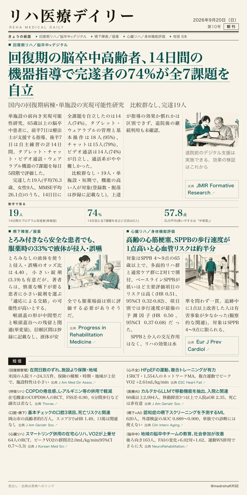
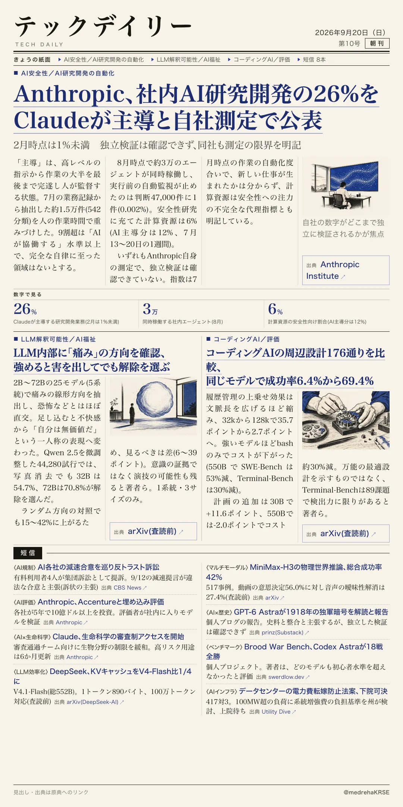

リハ医療デイリー
回復期の脳卒中高齢者、14日間の機器指導で完遂者の74%が全7課題を自立
国内の回復期病棟・単施設の実現可能性研究 比較群なし、完遂19人
日本の回復期リハ病棟に入院した65歳以上の脳卒中患者に、タブレット・チャット・ビデオ通話・ウェアラブルの使い方を14日間で指導。完遂した19人のうち、初日に全課題を自立できた人はいなかったが、14日目には14人(74%)が全7課題を自立した。

テックデイリー
Anthropic、社内AI研究開発の26%をClaudeが主導と自社測定で公表
2月時点は1%未満 独立検証は確認できず、同社も測定の限界を明記
Anthropicが「R&D自動化指数」を公表。約1.5万件のタスクを人の作業時間で重みづけすると、Claudeが作業の大半を最後まで完遂し人が監督する業務は26%で、2月の1%未満から拡大した。
